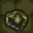

Unfortunately the knights are not the only beings in the dungeon. The dungeon's native inhabitants will not be pleased at your intrusion, and will try to kill you on sight...
Vampire Bats: There are blood-sucking vampire bats with razor-sharp fangs which can even pierce plate armour. They are easily killed, but can just as easily kill a panicked knight. Be warned, their sonar cannot be fooled by invisibility.
 Zombies: Evil magic will cause corpses to slowly turn into zombies. Zombies are tough, if somewhat stupid opponents. They can smash their way through any wooden objects that get in their way.